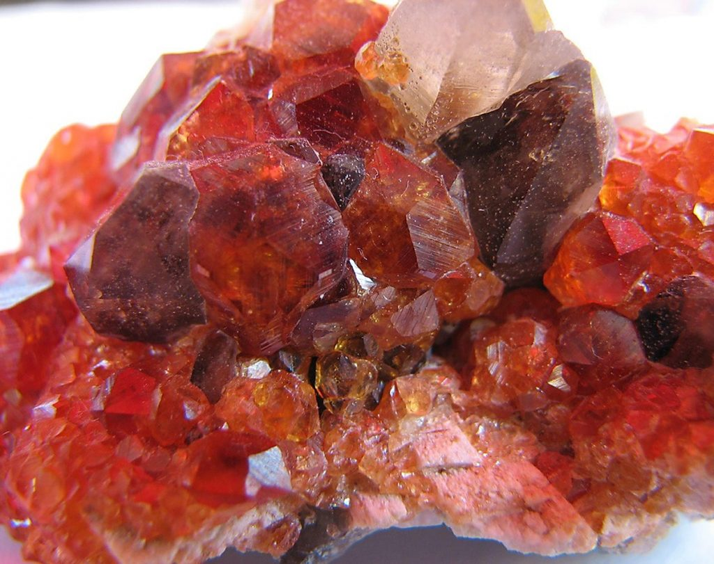

化学式
A3B2Si3O12
Aにはカルシウム（Ca）、マグネシウム（Mg）、マンガン（Mn）、鉄（Fe）などが入ります。Bにはアルミニウム（Al）、クロム（Cr）、鉄（Fe）などが入ります。
宝石言葉・石言葉
「勝利」「実り」「情熱」「真実」「友愛」「貞節」
A3B2Si3O12
Aにはカルシウム（Ca）、マグネシウム（Mg）、マンガン（Mn）、鉄（Fe）などが入ります。Bにはアルミニウム（Al）、クロム（Cr）、鉄（Fe）などが入ります。
「勝利」「実り」「情熱」「真実」「友愛」「貞節」
アメリカ、インド、ブラジル、スリランカ等
ガーネットは、1月の誕生石として広く知られており、その深い赤色が特徴的です。ガーネットという名前は、ラテン語の「granatum」（ザクロ）に由来しており、ザクロの実のような赤色をしています。この石は、古代からお守りとして使われ、友情や忠誠心を象徴する石とされています。
ガーネットは、持ち主にエネルギーと情熱をもたらすと信じられており、困難な状況でも前向きな気持ちを保つ助けとなります。また、ガーネットは愛情や友情を深める効果があるとも言われています。
ガーネットは、持ち主にエネルギーと情熱をもたらすと信じられており、困難な状況でも前向きな気持ちを保つ助けとなります。また、ガーネットは愛情や友情を深める効果があるとも言われています。
ガーネットは、情熱を持ちたい人、友情を深めたい人、困難な状況でも前向きに進みたい人に特におすすめです。この石を持つことで、自分自身のエネルギーを高め、ポジティブな気持ちを維持する助けとなるでしょう。